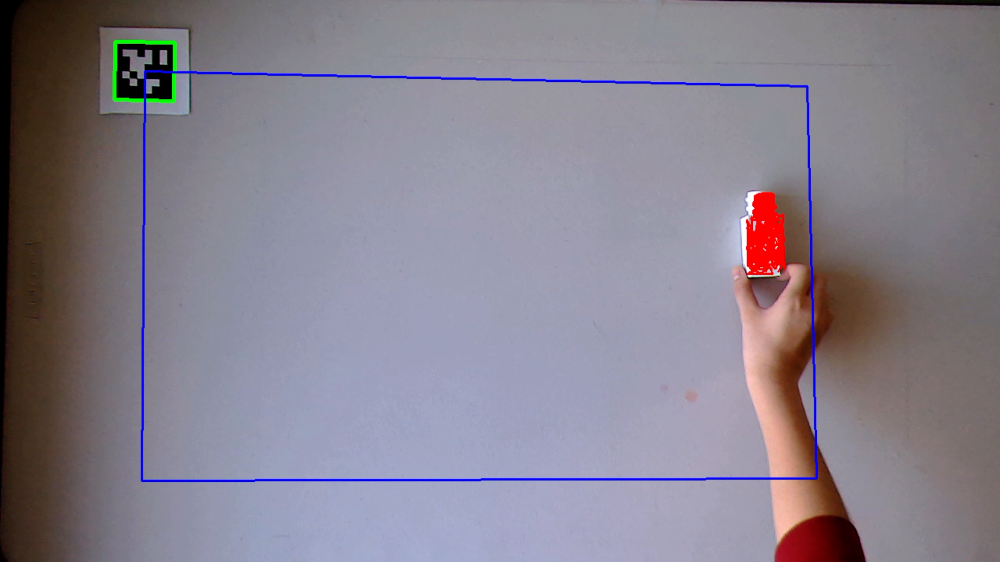
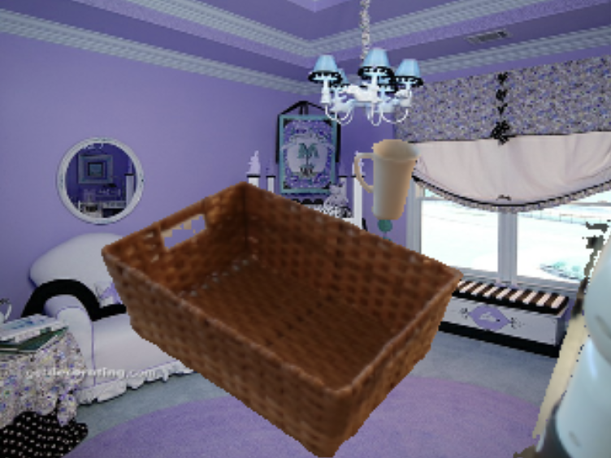
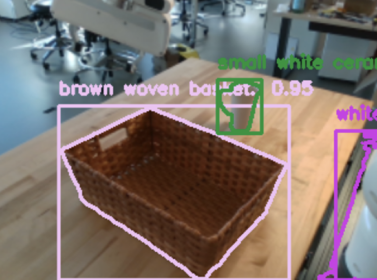
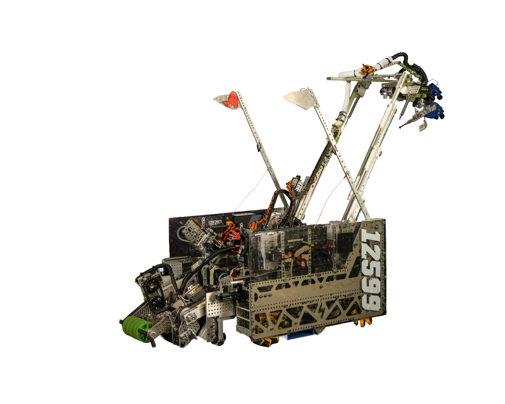
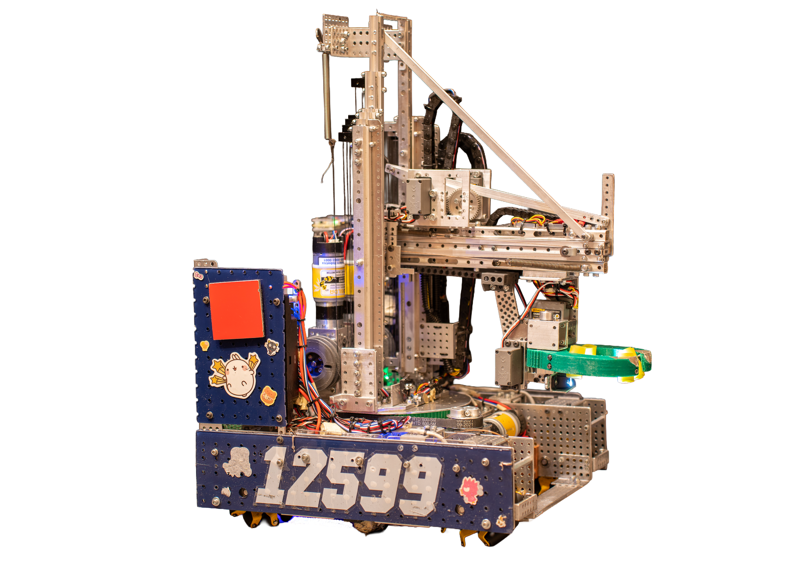
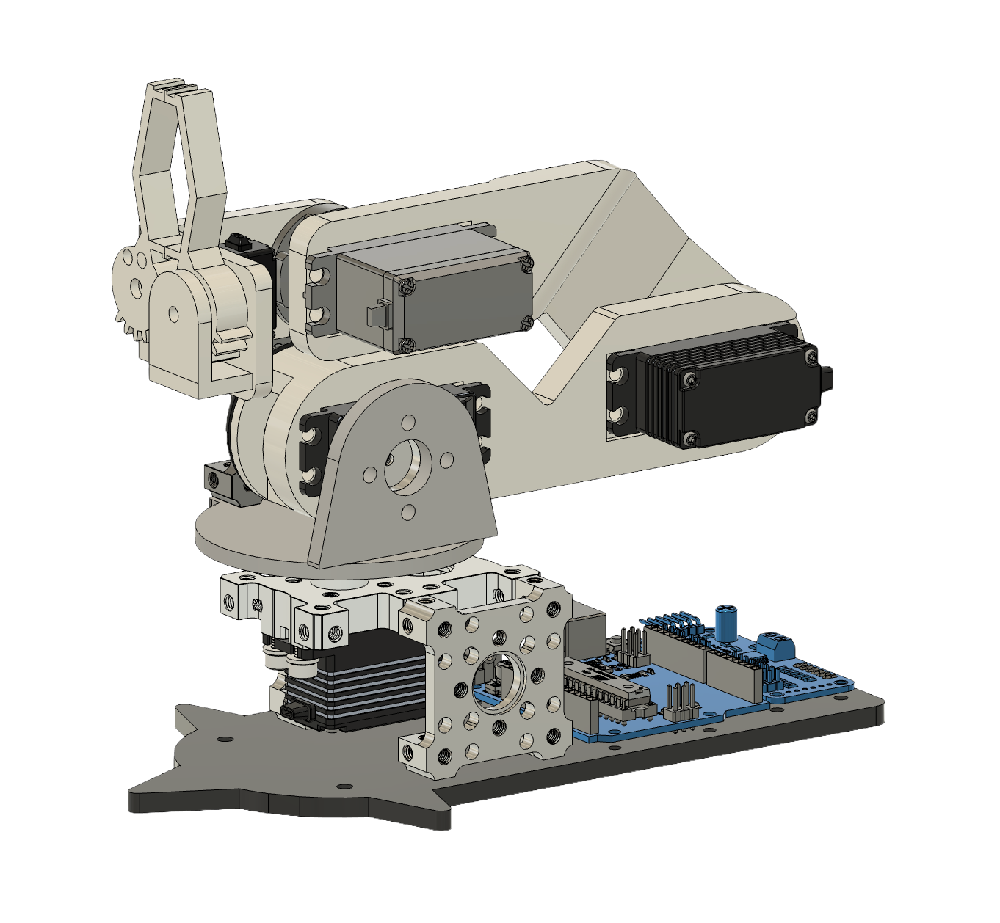
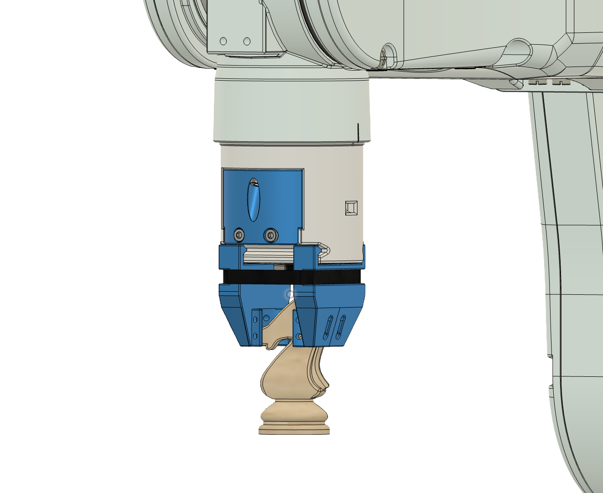
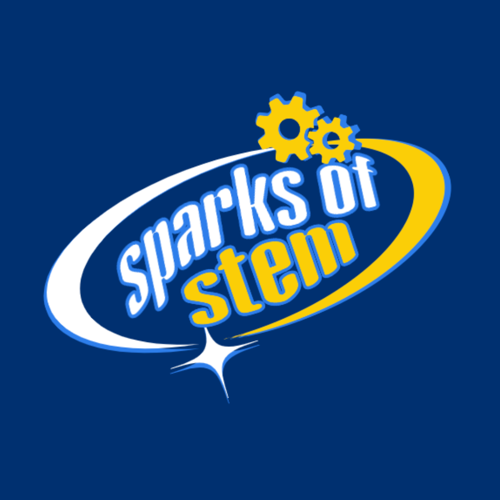

{kind=link}
ResearchI'm interested in both the hardware and software innovations in robotics. My past research includes reinforcement learning for dexterous manipulation, improving emotional/social intelligence for human-robot interactions, and making policies more robust and generalizable. |
|
 |
Randinit: Randomized Data Collection Tool for Robust Robot Learning
project page / poster Ensuring the randomization and uniformity of initial object positions when collecting demonstration data using systematic randomization algorithms, AprilTag alignment, and real-world pose estimation. Research done in collaboration with Lars Ankile at the Improbable AI Lab @ CSAIL. |
|
  |
Maskify: Diverse Data Collection Tool for Robust Robot Learning
project page / poster Increasing real-world dataset diversity and quantity while requiring less computational power using automatic object mapping and random background generation. Research done in collaboration with Lars Ankile at the Improbable AI Lab @ CSAIL. |

|
Investigation of Graphene Coatings on Iron-based Alloys through Mechanochemical Ball-Milling
paper 1 / paper 2 Improving the coverage and uniformity of graphene coatings on iron-based alloys through mechanochemical ball-milling. Co-author on two poster presentations for the 2023 Microscopy and Microanalysis Conference, based on the above papers. Research done in the nanodevice fabrication lab @ Portland State University. |
Design PortfolioI'm passionate in designing and creating innovative solutions to real-life problems. Some of my projects include world-ranking FIRST FTC robots, a custom quadruped dog, and tools for labs/companies. |
|
 |
Pegasus: Multi-function wheeled robot for 23-24 FIRST FTC Robotics Competition
CAD link / demo Components: virtual 4-bar for element collection, differential gearbox arm for element deposit, and instantaneous counter-sprung mechanisim to hang. Awards: 2nd ranked in Oregon, State Record, World Championship Qualifier. |
|
 |
Stork: Multi-function wheeled robot for 22-23 FIRST FTC Robotics Competition
world record / demo Components: turret-crane design (lazy susan and vertical/horizontal slides), and four-point contact claw. Awards: 1st ranked in World, World Record, Maryland Tech Invitational Winner. |

|
12-DOF Quadruped Robot: Passion Project
CAD link Components: fully custom designed and 3D-printed/CNC parts, differential system legs, and inverse kinematics function for movement control. |
|
 |
5-DOF Compact Robot Arm: Passion Project
CAD link Components: foldable, low-profile arm used for leader-follower control and imitation-based learning experiments. |
|
 |
Passive Chess Grabber for Olympus Control
CAD link Components: rubber band to passively contour to chess piece shapes, compact design to house servo, mount for camera detection. |
Community ProjectAisde from STEM, I'm passionate about giving back to the community through education and mentorship. |
|
 |
Sparks of STEM: Interactive STEM Intiative for Underrepresented Students
project plan
Designed hands-on curriculum to spark interest and provide resources for
underrepresented students across Oregon to participate in STEM. Visited 30+
schools and impacted 1k+ students.
|
|
Design and source code from Jon Barron's website. |